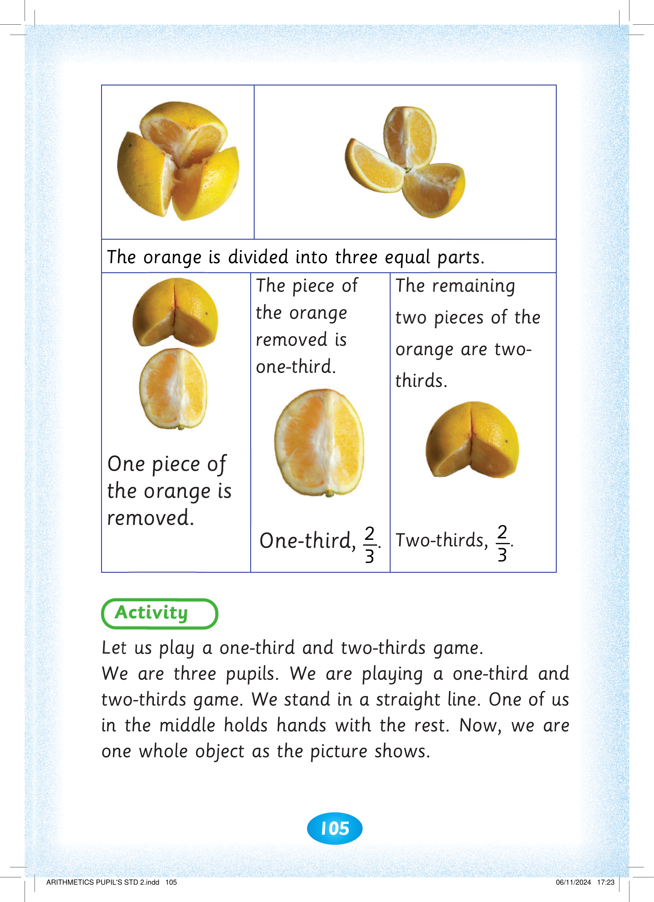

1

105


The orange is divided into three equal parts. One piece of the orange is removed. The piece of the orange removed is one-third. One-third, 1 over 3. The remaining two pieces of the orange are two-thirds. Two-thirds, 2 over 3.

One piece of the orange is removed.
The piece of
the orange removed is one-third.

One-third, 3
1.
The remaining
two pieces of the orange are two-
thirds.

Two-thirds, 3
2.
Activity. Let us play a one-third and two-thirds game. We are three pupils. We are playing a one-third and two-thirds game. We stand in a straight line. One of us in the middle holds hands with the rest. Now, we are one whole object, as the picture shows.
Let us play a one-third and two-thirds game.
We are three pupils. We are playing a one-third and two-thirds game. We stand in a straight line. One of us in the middle holds hands with the rest. Now, we are one whole object as the picture shows.


ARITHMETICS PUPIL'S STD 2.indd 105
06/11/2024 17:23